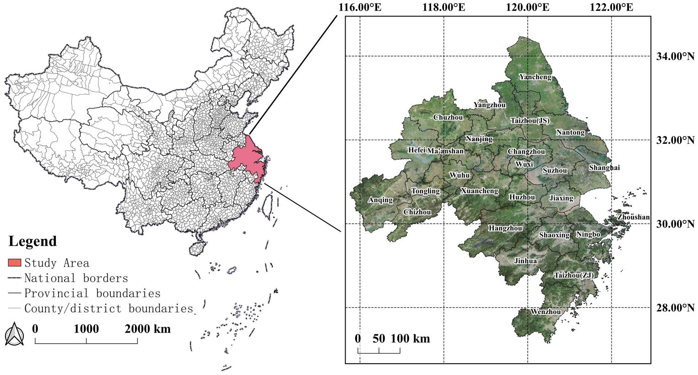

03 · Case Study
211,700
km²
Shanghai · Jiangsu · Zhejiang · Anhui
27
cities
1/5
of national GDP
11 heterogeneous datasets across raster & vector formats drive the 27 indicators and CA simulation.

| Data | Format | Resolution | Data Year(s) | Publisher |
|---|---|---|---|---|
| Land use | GeoTiff | 30 m | 2010, 2015, 2020 | Resource & Environment Science and Data Center |
| Ecological conservation areas | Shapefile (Polygon) | — | Latest (2024) | Protected Planet |
| DEM | GeoTiff | 30 m | 2019 | ASTER GDEM |
| POIs data | Shapefile (Point) | — | 2014, 2019 | GaoDe |
| Roads | Shapefile (Line) | — | 2014, 2019 | OpenStreetMap |
| Administrative divisions | Shapefile (Line) | — | Latest (2024) | Geographical Information Monitoring Cloud Platform |
| Current population | GeoTiff | 1 km | 2010, 2015, 2020 | WorldPop Hub |
| Future population | GeoTiff | 1 km | 2020–2050 | Li et al. (2022) |
| Waters | Shapefile (Polygon) | — | Latest (2024) | OpenStreetMap |
| Carbon emission coefficients | Text | — | 2023 | Yao et al. (2023) |
| Mobile base station data (POIs) | Text | — | Latest (2024) | OpenCelliD |